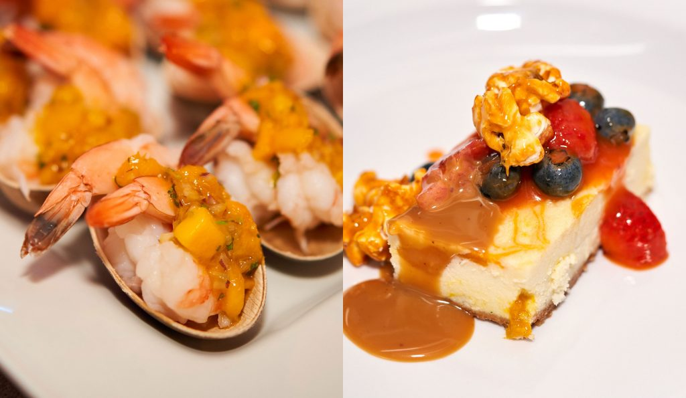
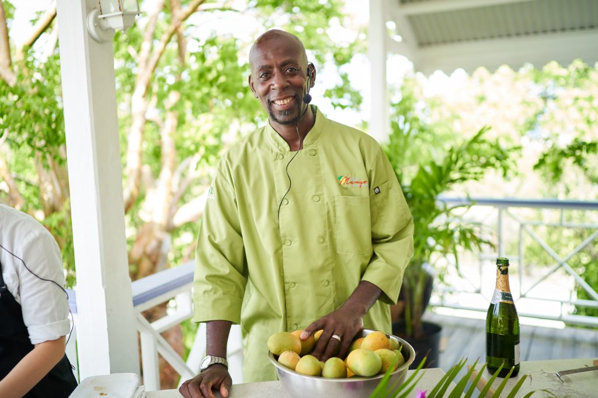

Where the mango reigns supreme
On the island of Nevis, it literally rains mangoes in the summertime. The abundant stone fruit has melted into the cuisines, cultures and hearts of the people who live on the idyllic Caribbean sister island to St Kitts. Six years ago, in an attempt to boost tourism in the slow summer months, Nevis Tourism Authority began the Nevis Mango and Food Festival to capitalise on mango season, while supporting the agriculture sector’s effort to establish a viable mango industry for Nevis, where just one road circles the whole island and it takes an easy 45-minute drive to circumnavigate. The Festival is also an opportunity for Nevisian Chefs to come together, working alongside growers, to showcase the versatile mango which is more than just a delicious stone fruit to the island residents. It could also be a livelihood.
By Michelle Curran
Mangoes are something of a national pastime throughout the Caribbean, with each village claiming they grow the best mangoes.
It is a hotly-contested rivalry.
On the island of Nevis, mangoes are very much part of the islanders’ lives, offering nourishment, and potentially a form of income as the agricultural sector strives to establish a mango industry for Nevis.
Over 500 varieties of mangoes can be found growing worldwide, while there are officially 44 different kinds of mangoes in Nevis; the Amory Polly, Julie and Long mangoes are just a few of the most prized.
At the peak of the sugar industry in the 18th-century, Nevis was known as the Queen of the Caribbean, for the island’s beauty and social grace of its planter and merchant families.
Since the last sugar mills shut down in the 1930s, the former British colony has come to depend pretty much solely on tourism and it has taken a careful approach to development – steering clear from mass tourism, cruise ships and busy resorts.
The establishment of the Nevis Mango and Food Festival six years ago was a way of not only increasing tourist numbers in the slower summer months; but to capitalise on mango season – which typically runs from June until September – bringing together chefs, foodies, the hospitality sector, and growers to enjoy everything the mango has to offer.
Founder of the Festival Nevis Tourism Authority continues to run and host the weekend-long event from July 4-7, totally dedicated to the mango and the deliciously creative cuisine made with it.
Chief Executive Officer for the Tourism Authority Greg Phillip says the Festival came about due to the abundance of varieties of mangoes as well as the amazing food scene already established in Nevis.
“We also needed an innovative event to attract summer visitors so we combined these two features of Nevis to create what has become one of the world’s most creative food festivals,” Greg says.
 Local chefs showcase their mango-inspired creations at the Nevisian Chefs Mango Feast. CREDIT Supplied.
Local chefs showcase their mango-inspired creations at the Nevisian Chefs Mango Feast. CREDIT Supplied.
The Festival targets food-loving travellers and tourists, who are seeking a memorable vacation experience of a lifetime, he adds.
“When we were setting up the Festival, the main purpose of it was to attract summer visitors to Nevis; but now it also aims to support the agriculture sector’s effort to establish a viable mango industry for Nevis.”
While Nevis cannot export fresh mangoes due to quarantine restrictions, there are goals to develop an industry where the frozen pulp can be exported.
With mangoes in abundance throughout the Caribbean and of course, on the island of Nevis, which covers a meagre 36 miles, Greg adds he has seen a definite resurgence in chefs and eateries around the island using local products.
“Food made with the freshest high quality ingredients simply tastes better.”
There are no fast-food restaurants on Nevis, and restaurants there range from rustic beach bars and authentic village eateries, to refined places for more formal dining.
Nevis is known throughout the Caribbean for its excellent culinary scenes, and this is mostly due to its local chefs.
The best local culinary talent is on display at the Nevisian Chef’s Mango Feast event, a feature event of the Festival.
These chefs come from top-rated restaurants on Nevis, and face the same creative culinary challenge to incorporate Nevis mangoes in all they cook.
Local culinary students are also chosen as interns to work along with the professional chefs, to present them an extraordinary opportunity to gain valuable experience, and to help them earn a scholarship to help them to complete their studies.
Greg says the Nevisian Chefs Mango Feast is indeed the highlight of the Festival.
“This is the final event and it involves native Nevisian chefs who create their best mango dishes and provide them as free samples to the patrons – locally-based restaurants also do the same.
“There is also a mango cooking competition with chefs from across the Caribbean and live music, which all takes place on July 7, while the mango tasting event and village food tour which happens the day before are also highlights,” he adds.
The Cooking Mango Masterclass with a local chef offers the opportunity to participate in a practical cooking session with an expert on cooking with mangos; while the various dinners over the weekend provides a chance to sample mango-inspired dishes, as well as network with chefs and guests.
Returning to take part in the Nevisian Chefs Mango Feast is Chef Llewellyn Clarke, a butcher at the Four Seasons Resort Nevis, and co-owner of Llewellyn’s Agro Processing Factory.
The chef of thirty years is renowned for his pepper sauces, made on Nevis but enjoyed worldwide.
Born in Manchester, England, Llewellyn says he distinctly remembers his first cooking experience of making fresh bread and Nevisian coconut tart with his mother.
“This ignited my journey to becoming a chef and working in some of the best restaurants in London and Canada, including Le Caprice, The Ivy and Auberge du Pommier.
“It was this skill of producing high quality food with top quality produce that I took with me when I immigrated to Nevis in 1999.”
In that time, he has produced gourmet hot pepper sauces in a variety of flavours, such as thyme, papaya and guava.
“My freshly made local ice creams include mango, soursop, coffee and Jack Daniels for the drinkers.
“Our Jams and chutneys are renown for locking in the flavour of the Caribbean, while the milled products such as breadfruit flour is a winner with the health conscious and those on gluten free diets,” Llewellyn adds.
The chef’s signature products however are hot pepper and thyme sauce closely followed by mango and hot pepper sauce, he has developed over the years.
These products are enjoyed locally and have become essential souvenir items for many tourists – the sauces are served daily at Four Seasons Resort and Sunshine’s Bar and Grill on Nevis, while also sold at local supermarkets.
Llewellyn says the reason why he takes part in the Nevis Mango and Food Festival and the Mango Feast is to show how the mango can be incorporated into many dishes – from starters, main courses to desserts, and to showcase mango-based creations.
For this year’s Mango feast, Llewellyn is preparing a dish called Mango Chicken Fiesta, which he describes as a colourful mango chicken dish, with peppers and onions.
 Judging is serious business at the Nevis Mango and Food Festival. Credit Supplied.
Judging is serious business at the Nevis Mango and Food Festival. Credit Supplied.
“I really cannot wait to watch the Festival unfold with all the chefs in full-swing, showing the talent Nevisian chefs have to offer.”
The chef says it is important to use locally-produced foods and he encourages other chefs and those in the tourism and hospitality industries to do so also.
“I typically use local foods from Nevis in my cuisine – in ice creams made from local fruits, salad dressings, regular pepper sauce and fruit-flavoured pepper sauces too.
“Using local produce helps the farmers and the market vendors’ pockets – and ultimately the money stays in the country.
“This encourages farmers to plant, thus creating work for others.”
Fortunately, the demand for locally-produced foods is growing, with many people being turned off imported foods which have been exposed to chemical assistance to make them look good, he says.
“A lot of the food grown and produced on Nevis is free from chemicals and can definitely be called organic.
“The health-conscious are now enquiring more about the food we consume; how it is prepared; and checking the ingredient list.”
Other Nevisian locals joining Llewellyn in the Mango Feast include Chef Michael Henville, a Nevis school meals programme chef; Chef Wilroy Webbe, who trained in the craft of cooking authentic Nevisian cuisine and works at Wilma’s Diner in Charlestown, Nevis; and Chef Renaldo Mills, a professional chef with the burning aspiration to become an executive chef at a Five Star luxury hotel.
Nevisian Chef Iyana I. Dore has participated in the Nevis Mango and Food Festival for five years and will return in 2019.
Each year she bakes – even though asked to cook – resulting in delicious mango-inspired creations.
Chef Aalyah VJ Caines – a chef at the Park Hyatt, St. Kitts – speaks of food with a certain passion which reminds you of an artist speaking about her latest work.
She will be joined at the Mango Feast, with a fellow culinary artist, Chef Berecia Stapleton, who creates food from unlikely paired ingredients.
This year, the Nevis Mango and Food Festival will also see international celebrity chefs taking part in, and hosting multiple events over the weekend.
Headlining the Festival is Food Network affiliated Chef Judy Joo, who is Korean-American French-trained and based in London.
Judy has been an Iron Chef with the Food Network in the United Kingdom and has appeared as a judge on shows on the United States Food Network.
She will take part in the cooking demonstrations, oversee the cooking competitions among other Nevisian chefs, and whip up some of the most flavourful mango dishes to be had anywhere.
(Left) Mango Shimp Cocktails. CREDIT Supplied.
(Right) Mango Cheesecake topped with Caramel Popcon and Mixed Berries. CREDIT Supplied.
Chef Judy Joo’s Mango Lime Ricotta Parfaits
Ingredients
1½ ripe mangos, peeled, pitted, and cut into 2cm pieces, plus some sliced for garnish
½ lime, juiced
1 cup (135g) granola
2 cups ricotta (500 grams)
4 tsp honey, plus more for drizzling
zest of 2 limes
Method
In a small bowl, toss the mango in the lime juice to coat.
In juice glasses, create layers, by spooning in carefully some mango, then top with a layer of granola, some ricotta, then some honey. Repeat.
Garnish with fresh mango slices on top, a drizzle of honey, and curly lime zest.
Fellow international chef cooking alongside Judy will be Chef Simon Jenkins.
Simon has to date worked with some of the most highly regarded chefs at Michelin star level; he now runs his own successful consultancy / advisory business, in the UK and internationally.
For Nevisians, mango season means eating mangoes – and not much else –all day, and now of course, it means the Nevis Mango and Food Festival.
Mango is a comfort food, which nourishes both the body and soul.
Its popularity can be felt in every aspect of local life and culture in Nevis – and its motif used in textiles, paintings, jewellery and as an everlasting sign of desire and plenty.
With such abundance, there is definitely scope for an industry of sorts, allowing the mango to also positively impact Nevisian’s socio-economic status.
The Nevis Mango and Food Festival is an incredible opportunity to feature this Nevisian staple; promote awareness around it; and create far-reaching demand for Nevisian mangoes – providing income for growers, and delicious produce for chefs and the tourism/hospitality industry to utilise.
It is also a chance to taste some of the best food in the Caribbean, where the humble mango is the star – and offers so much more than just a tasty treat.
Nevis Chef Llewllyn Clarke. CREDIT Supplied